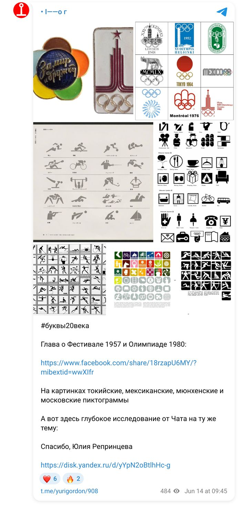
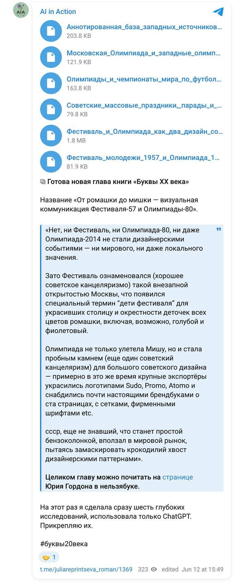

The book “Letters of the 20th Century” · May — June 2026 · research 10
“Let me pitch the idea and you turn it into a prompt”: describe and compare the design of the 1957 Youth Festival and the 1980 Olympics, and set them against Western design of the same years; both deep research and a digest were needed.
A series of six briefs and six Deep Research runs: Soviet mass festivities, Olympic design systems 1968–1980, World Cups, an annotated base of Western sources — and a single analytical chapter built on them. Yuri Gordon called the final base the best thing AI had done for his book.
ChatGPT Deep Research
Below are the briefs the models received, the finished reports in PDF and the documents, as well as the publications made as the work went along.
Briefs
My document · the text the model received · 21 May 2026
Based on the attached research reports, prepare a single analytical chapter / paper on the topic:
The Festival and the Olympics as two design events: from the Soviet mass festivity to international event branding
Bring the results of several studies together into a coherent, logical, well-structured text.
The main idea to be tested and developed:
The 1957 World Festival of Youth and Students and the 1980 Moscow Olympics can be seen as two points in the development of Soviet design for an international event. The 1957 Festival is tied to Thaw-era festivity, youth, peace, the USSR opening up to the world and the decorative dressing of the city. Olympics-80 shows a more mature, systematic and institutional form of event branding, in which the Soviet tradition of the mass festivity merges with international Olympic standards, wayfinding, pictograms, a mascot, souvenirs and the television picture.
Write it as a research text for a book, a lecture or an exhibition catalogue:
My document · the text the model received · 21 May 2026
Conduct deep research on the topic:
Soviet mass festivities, parades and sporting mega-events: visual organisation, ceremonies and the urban environment
Compare the visual and scripted organisation of Soviet mass festivities with the design and ceremonies of the Olympic Games and the football World Cups of the mid-20th century.
The main task is to understand which elements of Soviet festive culture were carried over into the design of the 1957 World Festival of Youth and Students and the 1980 Moscow Olympics, and which elements came from international sporting event branding.
Use:
Produce a report with the following structure:
Do not reduce the Soviet festivity to propaganda alone. Treat it as a complex system of visual management of space, the body, emotion, collectivity and the international image of the state.
My document · the text the model received · 21 May 2026
Conduct deep research on the topic:
The 1980 Moscow Olympics and Western Olympic design systems of 1968–1980: a comparative analysis
Compare the visual system of the Moscow Olympics-80 with Western Olympic design systems of the same period, especially with the 1972 Munich Olympics.
The main focus is to understand how the Soviet approach to Olympic design differed from the Western modernist approach and in what ways they were alike.
Be sure to cover:
Pay special attention to Munich-1972 as the key example of systematic modernist Olympic design.
Analyse:
Compare the sports pictograms of:
Assess separately:
Compare:
Compare:
Compare:
Compare how design went beyond paper:
Use:
Produce a report with the following structure:
Do not draw conclusions at the level of “the West — functionality, the USSR — ideology”. That is too crude. The picture needs to be more complex:
My document · the text the model received · 21 May 2026
Conduct deep research on the topic:
The Olympics and the football World Cups as global design events of the mid-20th century
Understand how, in the mid-20th century, the Olympic Games and the football World Cups turned from sporting competitions into complex design events: with emblems, posters, wayfinding, ceremonies, an urban environment, souvenirs, a television picture and international branding.
Separately, find out when and how the USSR joined the Olympic movement and the football World Cups.
Main period: 1948–1980.
Special focus:
Check all dates against reliable sources.
Be sure to cover:
Cover the key tournaments of 1950–1982:
Look especially closely at:
Use:
Produce a report with the following structure:
Check the dates and make no assumptions without sources. If there is little data on wayfinding and city decoration for the World Cups, state the gaps openly.
Results
Publications
Yuri Gordon and I — about this work in our own channels (in Russian). Each post links to the original.

